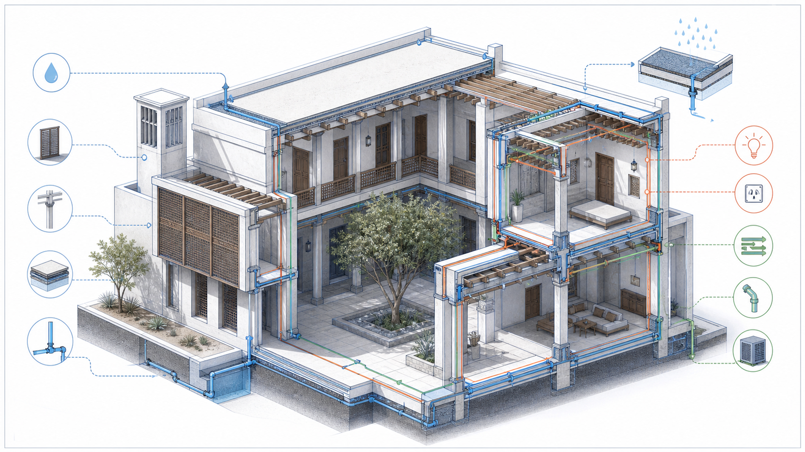

الظل
تُحجب الشمس المباشرة عن الواجهة الأكثر تعرضًا باستخدام تظليل مناسب لاتجاهها، ولا يكفي وضع مظلة واحدة لكل الواجهات. يراجع عمق المظلة مع زاوية الشمس المحلية.
عرض تعليمي يشرح كيف ينتقل القرار من الموقع والمناخ إلى الكتلة والقطاع والأنظمة، مع صورة توضيحية أصلية ومخططات تحليلية وروابط متابعة.
كيف نصمم بيتًا يوفر الخصوصية والضوء الطبيعي والتهوية والظل، ويقلل اكتساب الحرارة، مع مسار خدمة واضح ونظام إنشائي وخدمات قابل للصيانة؟ لا يبدأ الجواب من شكل الواجهة؛ بل من الموقع والمستخدم والمناخ.

رسم تعليمي أصلي للمنصة: يوضح الفناء، التظليل، الهيكل، تصريف المياه ومسارات الخدمات. ليس مخططًا تنفيذيًا ولا يحتوي أبعادًا أو تسليحًا.
تُحجب الشمس المباشرة عن الواجهة الأكثر تعرضًا باستخدام تظليل مناسب لاتجاهها، ولا يكفي وضع مظلة واحدة لكل الواجهات. يراجع عمق المظلة مع زاوية الشمس المحلية.
ينشئ فراغًا خارجيًا محميًا، لكن حجمه وارتفاع جدرانه ونباتاته وفتحات الغرف تحدد نجاح الظل وحركة الهواء. يجب أيضًا ضبط تصريف ماء المطر إلى مصارف آمنة.
مخطط تحليلي: يوضح منطق الفناء بين كتلتين والتظليل العلوي بصورة تعليمية.
| الرسم | السؤال الذي يجيب عنه | العنصر الذي يجب تدقيقه |
|---|---|---|
| Plan | كيف يتحرك الضيف والعائلة والخدمة؟ | الأبواب، الممرات، الأثاث، المحاور والفراغات الرطبة. |
| Section | كيف يدخل الضوء والهواء؟ | المناسيب، السقف، العزل، التظليل والدرج. |
| Elevation | كيف تعمل الواجهة تحت الشمس والمطر؟ | فتحة، إطار، كسوة، فاصل، عزل وتصريف. |
| Detail | كيف يلتقي عنصران فعلًا؟ | مادة، تثبيت، ماء، هواء، حرارة وحركة. |
قبل إصدار اللوحات، يجتمع المعماري والإنشائي وMEP على نموذج أو مخططات منسقة. الغاية ليست إخفاء الخدمات، بل ضمان وجود مسار، فتحة صيانة، غرفة معدات، ميول صرف، لوحات كهرباء، وتأمين حريق دون تعارض مع الهيكل أو الاستخدام.
المراجع: استخدم بيانات المناخ والكود المحلي والمراجع الرسمية. لا تستخدم هذا العرض كوثيقة بناء أو بديلاً عن مراجعة الاختصاصيين.